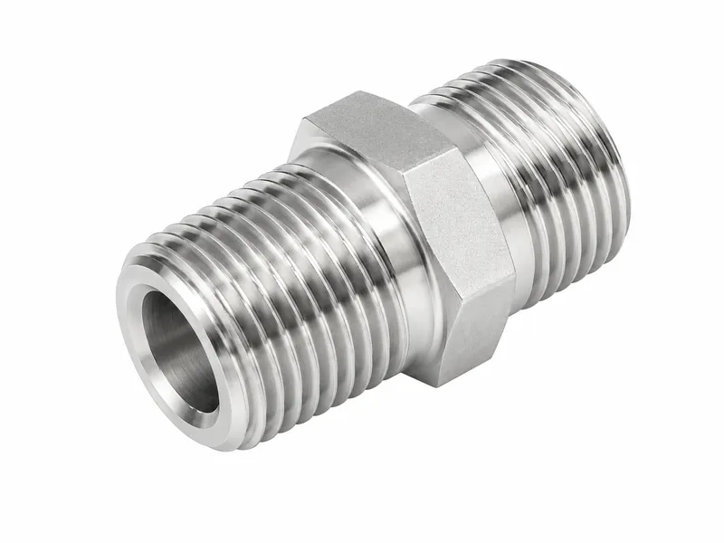
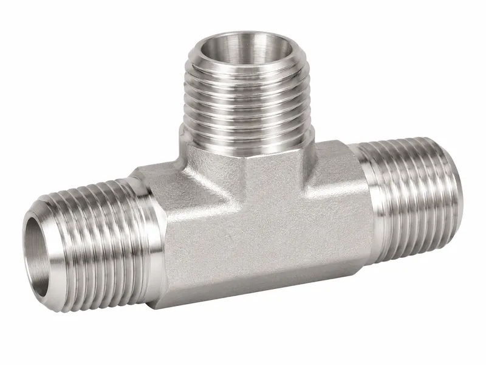
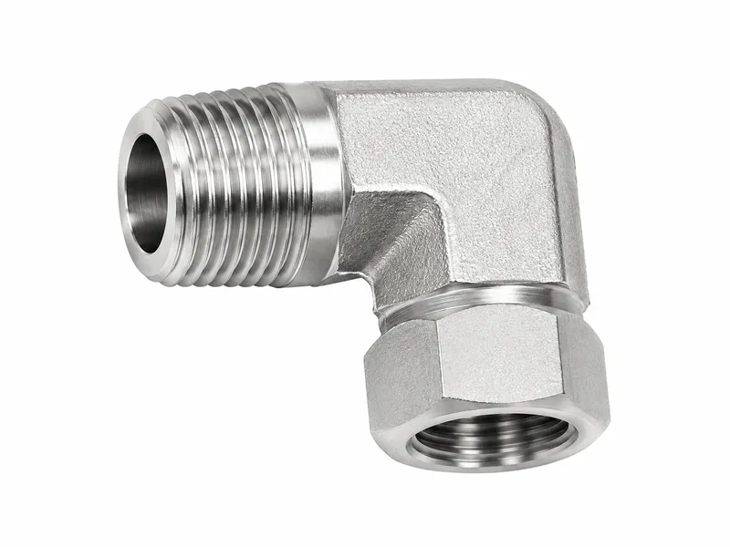
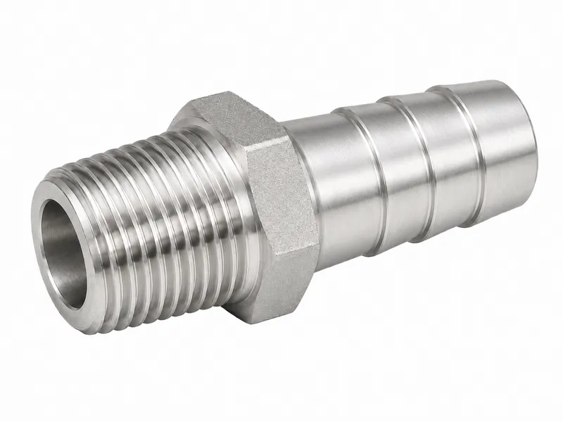

Hydraulic Fittings





NPT pipe fittings use American tapered pipe threads for compact threaded ports, pipe adapters, plugs and instrumentation connections. Correct sealant selection, thread engagement and port verification are important because NPT sealing differs from flare or face-seal systems. Wei Xing Machinery can machine custom NPT fittings with specified lengths, hex sizes and conversion ends.
NPT pipe fittings are threaded hydraulic and industrial pipe connectors using National Pipe Taper thread geometry. They are often selected for compact threaded ports, pipe adapters, hose tail connections and instrumentation interfaces. The tapered thread creates sealing contact during tightening and is commonly used together with suitable sealant. NPT pipe fittings are available in straight, elbow, tee, plug and conversion styles for hydraulic machinery, fluid transfer lines, maintenance systems and custom equipment assemblies.
| Product Type | NPT Pipe Fittings |
|---|---|
| Standard / Thread Type | ANSI/ASME B1.20.1 style NPT tapered pipe thread |
| Materials | Carbon steel, stainless steel or brass |
| Surface Treatment | Trivalent zinc, zinc nickel, black oxide, phosphating or stainless finish |
| Sealing Method | Tapered thread interference with suitable PTFE tape or liquid thread sealant |
| Custom Options | NPT male/female, hex nipples, plugs, elbows, tees, reducers and NPT to BSP/JIC/ORFS/metric adapters |
| Applications | Pipe connections, hydraulic auxiliary lines, pneumatic systems, manifolds, gauges and maintenance replacement |
| Pressure Requirement | Confirm pressure based on thread size, engagement length, sealant, material and media |
| NPT | Tapered pipe thread that seals on thread flanks with sealant; widely used in North American pipe and port connections. |
|---|---|
| BSP | British pipe thread; BSPT is also tapered but has different pitch/thread angle, so it must not be forced into NPT ports. |
| JIC | 37° flare seal for hydraulic tube/hose ends; thread is for clamping, not primary sealing. |
| ORFS | O-ring face seal for leak-resistant hydraulic lines where a flat face and O-ring groove are required. |
ANSI/ASME B1.20.1 style NPT tapered pipe thread is machined to match the required equipment port or hose assembly.
Tapered thread interference with suitable PTFE tape or liquid thread sealant is considered during machining and inspection.
Straight, elbow, tee, swivel, bulkhead or transition structures can be selected where applicable.
Drawings, samples and special thread combinations can be reviewed for OEM production.
NPT fittings rely on controlled taper thread engagement. Proper sealant fills the spiral leakage path and also helps prevent galling during tightening.
Avoid over-tightening NPT ports because taper thread wedging can crack thin-wall ports or distort manifolds. Confirm thread gauge, engagement length and sealant compatibility.
Carbon steel is commonly selected for general hydraulic machinery, stainless steel for corrosion resistance, and brass for selected lower-pressure or media-specific applications.
Surface finish options include trivalent zinc, zinc nickel, black oxide, phosphating and natural stainless finish. Selection should consider corrosion exposure, assembly environment and customer specification.
Please provide product type, thread size, sealing method, material, finish, quantity, pressure requirement, application environment and drawings or samples if custom dimensions are needed.
Wei Xing Machinery supports CNC machined custom hydraulic fittings according to drawings, samples, thread combinations, port requirements and surface treatment specifications.
Raw Material Inspection is controlled to keep threads, sealing areas, dimensions and export condition consistent for hydraulic fitting orders.
CNC Turning and Machining is controlled to keep threads, sealing areas, dimensions and export condition consistent for hydraulic fitting orders.
Thread Inspection is controlled to keep threads, sealing areas, dimensions and export condition consistent for hydraulic fitting orders.
Sealing Surface Inspection is controlled to keep threads, sealing areas, dimensions and export condition consistent for hydraulic fitting orders.
Surface Treatment is controlled to keep threads, sealing areas, dimensions and export condition consistent for hydraulic fitting orders.
Final Dimensional Inspection is controlled to keep threads, sealing areas, dimensions and export condition consistent for hydraulic fitting orders.
Packaging for Export is controlled to keep threads, sealing areas, dimensions and export condition consistent for hydraulic fitting orders.
What is this product?
NPT Pipe Fittings are precision machined hydraulic connection components used to join ports, hoses, tubes or panels according to the required interface.
How does it seal?
Tapered thread interference with suitable PTFE tape or liquid thread sealant.
What standards are used?
ANSI/ASME B1.20.1 style NPT tapered pipe thread.
What materials are available?
Common choices include carbon steel, stainless steel and brass according to pressure, corrosion and media requirements.
What surface treatments are available?
Trivalent zinc plating, zinc nickel coating, black oxide, phosphating or natural stainless finish can be selected according to the application.
Can it be customized by drawing?
Yes. Wei Xing Machinery can manufacture by drawing, sample, thread combination, body length, hex size, material and surface finish requirement.
What industries use it?
Pipe connections, hydraulic auxiliary lines, pneumatic systems, manifolds, gauges and maintenance replacement.
How do I request a quotation?
Send thread size, fitting type, material, finish, quantity, pressure requirement and drawings or samples when available.
Tell us your requirements and we'll provide a detailed quote within 24 hours.